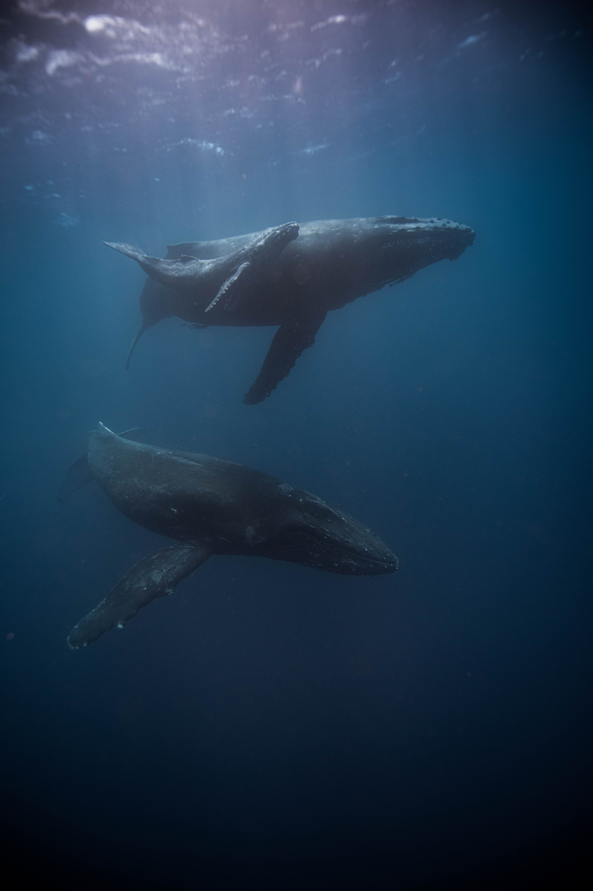

douces baleines
entre deux soupirs

Au cœur de l'océan, là où le bleu infini rencontre le ciel, réside une émotion profonde tissée dans le sillage des baleines. Elles ne sont pas simplement des créatures marines, mais des êtres empreints d'une poésie émotionnelle qui étreint le cœur humain.
Les baleines, majestueuses et douces, nagent dans l'océan comme des poèmes en mouvement. Leurs yeux, reflets des vastes horizons qu'elles parcourent, captent l'essence de l'inconnu, suscitant une mélancolie mêlée d'émerveillement. Ces gardiennes des abysses portent en elles des histoires millénaires, des légendes inscrites dans les vagues qui les bercent.
Leurs chants, une symphonie envoûtante, résonnent au plus profond de l'âme. Chaque note transporte des émotions indicibles, des échos de solitude et de communion. Les baleines, par leur langage mystérieux, semblent partager des sentiments universels, une communication qui transcende les barrières de l'espèce.

Lorsqu'elles émergent gracieusement à la surface, c'est comme si elles apportaient avec elles des fragments d'une autre réalité. Leurs nageoires, puissantes et délicates à la fois, évoquent un mélange d'émotions contrastées. Elles sont à la fois la force brute de l'océan et la délicatesse d'une caresse marine.
Les baleines incarnent la solitude sereine des vastes étendues océaniques, mais aussi la connectivité profonde qui unit tous les êtres vivants. Leur migration à travers les océans, une danse infinie entre solitude et communauté, évoque une émotion universelle de quête et d'appartenance.
Rencontrer une baleine, même à travers l'écran d'un navire, c'est ressentir l'étreinte de l'émotion pure. C'est se perdre dans le regard de ces créatures majestueuses et comprendre, ne serait-ce qu'un instant, la poésie inscrite dans le langage silencieux de l'océan. Les baleines, gardiennes des émotions marines, nous rappellent que chaque onde cache une histoire, chaque plongée raconte un récit, et chaque éclat d'éclaboussure est une expression d'une beauté émotionnelle infinie.